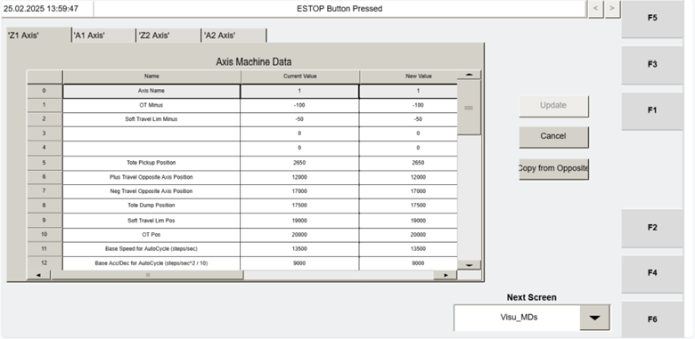
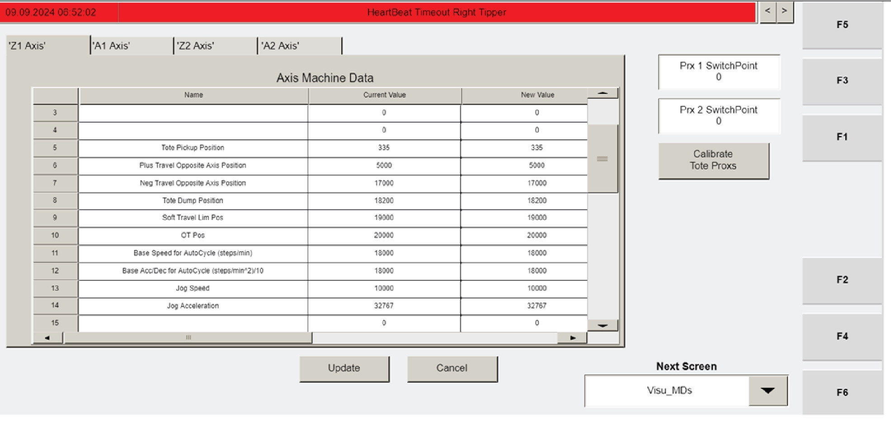
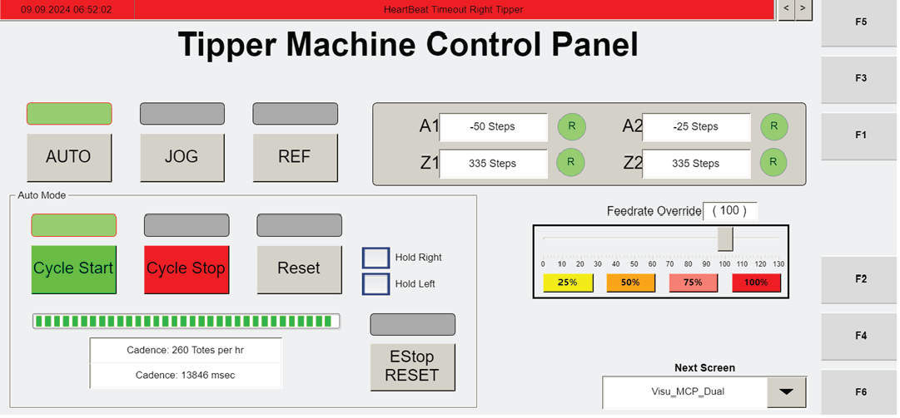

Set Z-axis home position using the Home Offset field
Procedure Type
operation
Primary Role
L2_support
Support Safe
Yes
Validation Status
needs_sme_review
Merge Status
source_finalized
Summary
Use the Visu_MDs screen (F2) to enter the previously recorded Z-axis position value into the Home Offset setting for each Z-axis, then confirm each change with UPDATE.
When To Use
Use during tipper commissioning when the previously recorded Z-axis position values are available and need to be entered as the Home Offset for each Z-axis on the Visu_MDs screen.
Procedure Steps
Step 1 — Open the Visu_MDs screen
Responsible role: L2_support
Instruction:
Navigate to the "Visu_MDs" screen using F2.
Expected result:
The Visu_MDs screen is displayed and the Home Offset setting area is available for review.
Screens / Images:

Overall Visu_MDs machine data screen layout for axis parameter editing.Operator station HMI reference for accessing the Visu_MDs screen using F2.

Screen or nearby artifact support for the Visu_MDs page with Home Offset and UPDATE workflow.

Screen or nearby artifact support for the Visu_MDs page with Home Offset and UPDATE workflow.
Stop or Escalate If:
The Visu_MDs screen is not available.
The Home Offset setting or New Value column is not available as described.
Step 2 — Enter the recorded Home Offset value for one Z-axis
Responsible role: L2_support
Instruction:
For one Z-axis, locate the "Home Offset" setting and enter the value recorded in the previous procedure into the "New Value" column.
Expected result:
The recorded value is entered into the New Value column for the selected Z-axis Home Offset setting.
Screens / Images:
Axis parameter rows and editable machine data fields on the Visu_MDs screen.Nearby artifact support for the Home Offset entry workflow on the Visu_MDs screen.Nearby artifact support for the Home Offset entry workflow on the Visu_MDs screen.
Stop or Escalate If:
The previously recorded Z-axis position value is not available.
The Home Offset setting or New Value column is not available as described.
Step 3 — Confirm the change with UPDATE
Responsible role: L2_support
Instruction:
Press UPDATE to confirm the change.
Expected result:
The entered Home Offset value is confirmed on the HMI.
Screens / Images:
Nearby artifact support for the UPDATE control used to confirm the Home Offset change.Nearby artifact support for the UPDATE control used to confirm the Home Offset change.
Stop or Escalate If:
The UPDATE control is not available as described.
The change cannot be confirmed on the HMI.
Step 4 — Repeat for the other Z-axis
Responsible role: L2_support
Instruction:
Repeat the Home Offset entry and UPDATE action for the other Z-axis.
Expected result:
Both Z-axes have their recorded Home Offset values entered and confirmed.
Screens / Images:
Multiple axis parameter areas on the Visu_MDs screen for applying the same workflow to the other Z-axis.Nearby artifact support for repeating the Home Offset and UPDATE workflow for each Z-axis.Nearby artifact support for repeating the Home Offset and UPDATE workflow for each Z-axis.
Stop or Escalate If:
The recorded value for the other Z-axis is not available.
The Home Offset setting, New Value column, or UPDATE control is not available for the other Z-axis.